There was a breakdown of communication between distributors (drivers) and store owners (operators).
Chick-fil-A's supply chain relied on nightly deliveries to hundreds of stores, coordinated between distribution drivers and store operators. When something went wrong — a delayed truck, damaged product, a shortage — there was no reliable system to flag it, track it, or resolve it in real time.

Stores were printing out 'cheat sheets' and taping them by the back door as a stop-gap solution for drivers.
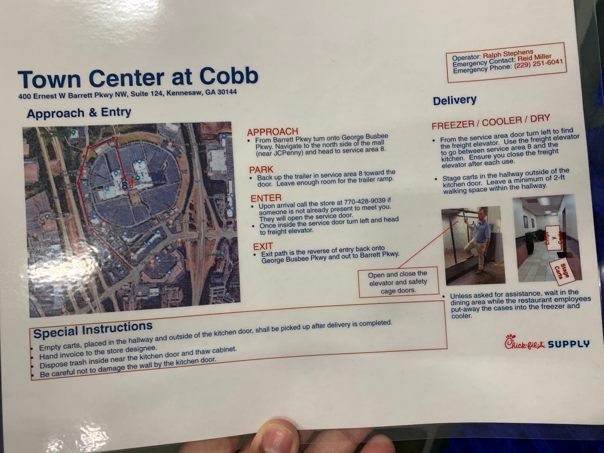
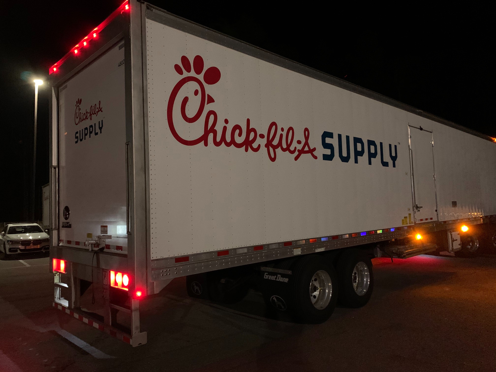
We went to Chick-fil-A HQ — and rode along on a night of deliveries.
At Chick-fil-A headquarters we spoke with operators, team members, and drivers. We also participated in 'ride alongs' to the stores where we observed what might happen on a night of deliveries.
We observed pain points, areas of opportunity, and defined our key user stories to focus on for the MVP.

On a good day, operators and drivers should never need to open the app.
We focused our key user stories on the things that could and would go wrong. The goal was to make it quick and easy to fix, report, and track issues as they occur.
Our primary scenario — "Bradley's Bad Day" — walked through an operator waking up to a delayed delivery notification, discovering a product shortage on arrival, and needing to file an issue report fast, on a loading dock, at 4am.
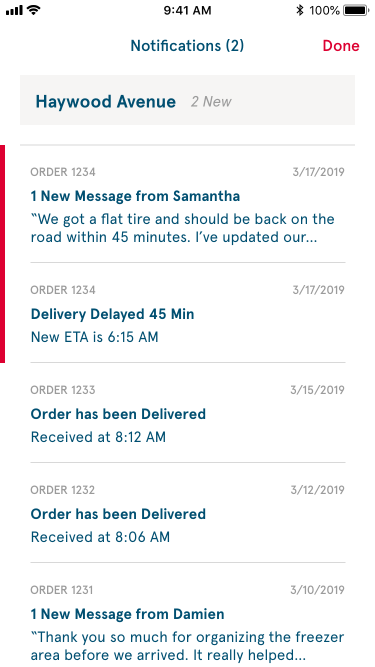
Q3 Experience Map — a high-level overview of the full application.
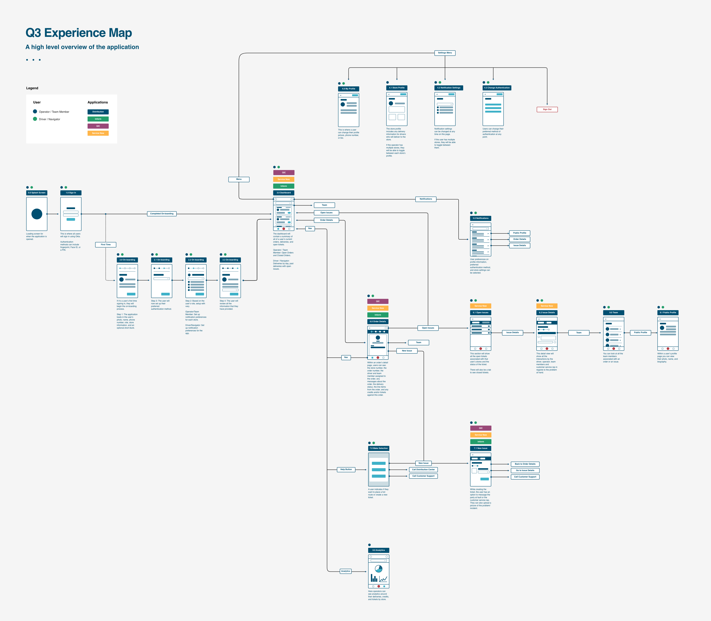
Mapping the onboarding flow before moving to high-fidelity.
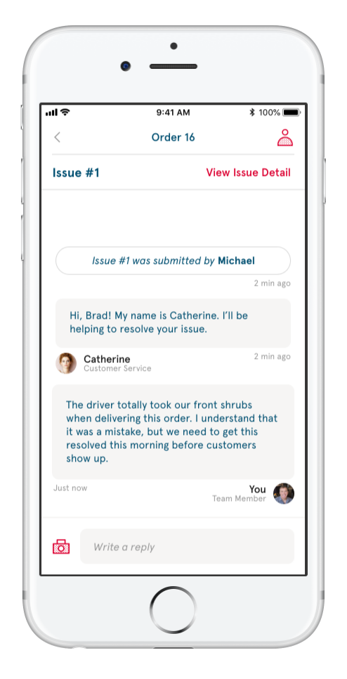
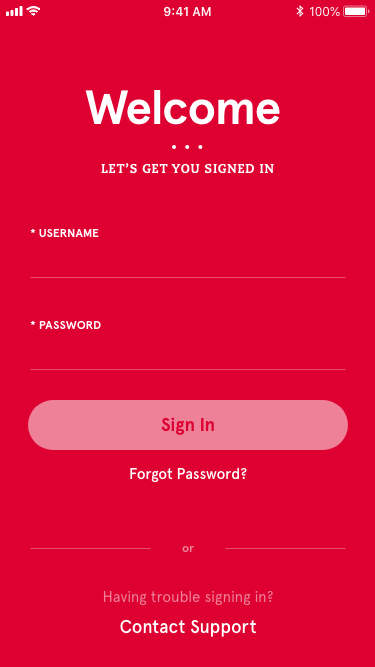
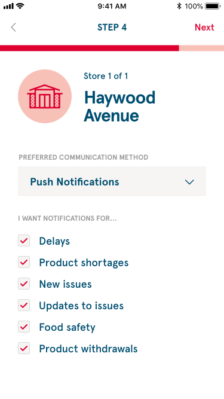
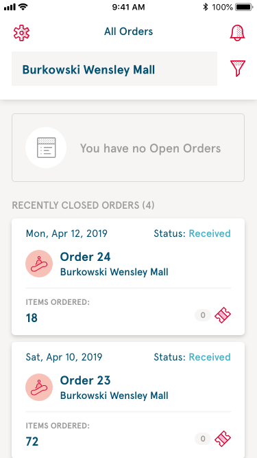
Order management — status at a glance, filtering, and push notifications.
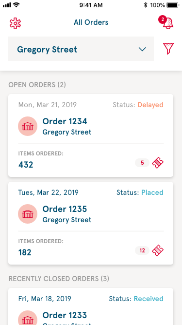
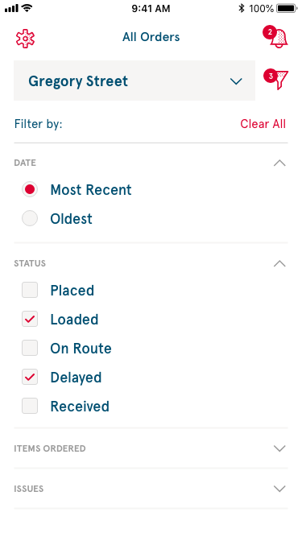
Quick and structured — report a damaged or missing product in under a minute.
Select the store and order, categorise the issue, add photos, review and submit.
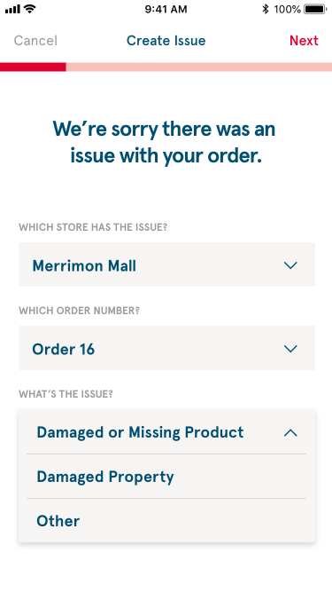
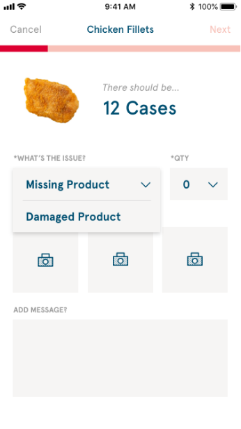
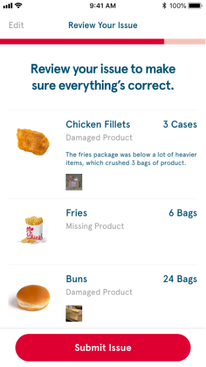
After a very successful test cohort with 20 stores, we were able to roll out the app. It is now used in every Chick-fil-A store and by all their distribution teams.
We continued to improve the app for another 2 years, adding new features and expanding to more user types, until I closed Clade Design's doors.